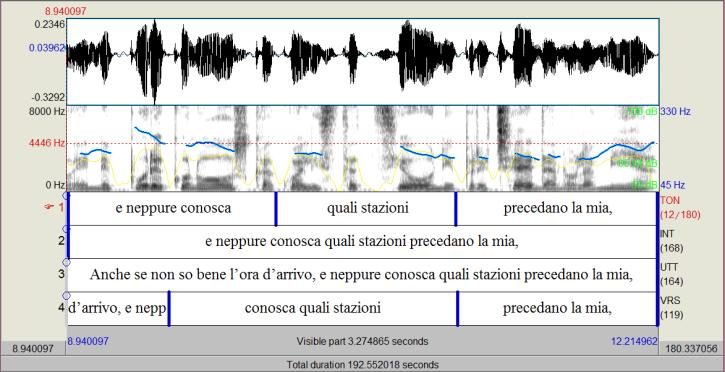
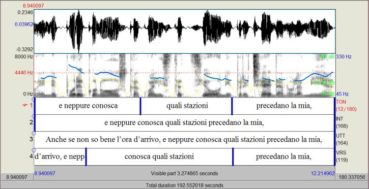

In costruzione
Metodo di studio e descrizioni fonetiche
Se infatti il testo poetico prende vita proprio con la voce e i suoi suoni si materializzano per mezzo dell’intonazione, questa è ancora una questione poco affrontata.
Nel panorama italiano si ricorda, a livello esofasico, il significativo studio di Schirru (2004), concentrato sull’aspetto ritmico. Se sulle letterature orali è più facile reperire materiale, bisogna riconoscere che la critica italiana ha spesso tralasciato la questione.
Tuttavia, come già Fortini documentava in un suo saggio, vi sono stati dei nomi significativi, tra i critici, che hanno argomentato a riguardo della lettura ad alta voce, come: Nencioni, Tavani, Raimondi, Gentili e Beccaria.
In ambito critico sono state elaborate inoltre diverse teorie sulla lettura e sul ritmo: rilevante è la scissione identificata da Cohen (1966), condivisa anche da Beccaria (1975), in una lettura “espressiva”, considerata non adeguata alla poesia, e di una “inespressiva”, invece conforme alla natura del lavoro poetico, incline alla “monotonia”.
In questo tipo di studio si fa uso di un impianto fonetico: unitamente all’aspetto percettivo non viene tralasciato quello pragmatico del testo, imprescindibile.
Oggetto dello studio sono le “interpretazioni” dei lettori (che preferiamo al termine “esecuzioni”). La metrica dedica all’aspetto musicale del testo i suoi studi, che si basano su un approccio endofasico, cioè sulla lettura “silenziosa”, che per Beccaria sarebbe anche l’unica dimensione reale della poesia.
Tuttavia essa “silenziosa” non sarebbe concretamente, già a dire di Fortini e poi secondo i recenti studi di neurolinguistica sul pensiero linguistico e il suono.
Uno studio prosodico permette dunque di analizzare la lettura ad alta voce della poesia, nella sua varietà notevole, osservando le differenti soluzioni interpretative realizzate.
Solo attraverso uno studio di tipo quantitativo in questa direzione si possono porre le fondamenta per uno studio più ampio e concretamente funzionale alla questione.
Un lavoro come questo è di tipo sperimentale e, per essere svolto, oltre che servirsi di una ricerca dei dati sul campo, si serve di software specifici come Praat, in grado di fornire oscillogrammi e spettrogrammi (con evidenza delle curve di frequenza e intensità).
Dall’esame dei dati e dal riscontro del divario tra la suddivisione prosodica e quella testuale/metrica è nata la necessità di creare una terminologia apposita, non essendovene una preesistente per studi simili, che viene adottata nel corso delle analisi.
Livelli di annotazione
Sono stati etichettati 4 livelli (TON, INT, UTT, VRS) nei quali si ritrovano annotazioni riguardanti rispettivamente: le unità tonali, le unità intonative (terminali), le unità enunciative (curve), i versi.Otto descrizioni di letture del Congedo del viaggiatore cerimonioso di Giorgio Caproni
La lettura originale del Congedo del viaggiatore cerimonioso analizzata è una lettura declamatoria, con delle cadenze melodiche ricorrenti e una frammentazione prevalentemente sintattica.Con i poeti contemporanei e gli speaker radiofonici coinvolti per questa ricerca si apre una prospettiva interpretativa diversa.
Essa si discosta da quella dell’autore e, seppure all’interno di una varietà interna, si caratterizza per una generale attenzione alla segmentazione secondo il verso, e non secondo sintassi e punteggiatura.
Confrontando, nello specifico, sei poeti (tre donne e tre uomini), è emersa una lettura più fedele al verso nei poeti uomini, che hanno realizzato un numero di versi-curva superiore rispetto alle donne, che si avvicinano invece maggiormente all’interpretazione di Caproni, con una suddivisione prosodica prevalentemente vincolata alla sintassi.
Limitate sono state in genere le occorrenze di curve inglobanti due versi per intero ed è emersa la frequente tendenza alla sospensione o all’abbassamento in presenza di inarcatura (unita anche al fenomeno dell’allungamento vocalico terminale sull’ultimo termine del verso).
Anche nella velocità di eloquio si rileva una significativa variabilità e tutte le letture presentano una durata maggiore rispetto a quella originale di Caproni: anche l’uso delle pause è apparso vario, presentando ampiezze complessivamente maggiori tra le poetesse.
La realizzazione della melodia è apparsa variegata nel complesso.
Si sono individuate principalmente due tendenze: una, basata sull’omogeneità e il mantenimento di uno stesso colore costante, al cui interno si sono individuate ulteriori sfumature (è il caso di Damiani, Loreto, Travi), e un’altra, improntata invece alla varietà cromatica, utilizzata in modo ciclico, ripetitivo nei movimenti e nei toni raggiunti (è il caso di Rondoni, Lauretano, Negro).
Si è individuata una tendenza microprosodica, tale da produrre variazioni ulteriori di sfumature intonative tra le poetesse Loreto e Negro.
Varia è stata anche la modalità di rendere le rime: tendenzialmente i segmenti melodici in questione tendono a essere eseguiti in modo mutevole e raramente uguale, nella maggior parte dei casi.
Presentiamo ora una sintetica descrizione delle singole letture.
Il movimento della melodia in Damiani appare generalmente uniforme e mediano, senza cadenze particolari: anche il ritmo sembra scandirsi con omogeneità melodica, al punto che le parole ritmiche della curva e nelle curve vicine si presentano in una fascia analoga e i picchi ricorrono in posizioni uguali.


Fig. 1. Finestre di Praat relative a due passaggi dell’interpretazione di Claudio Damiani
Con Rondoni il comportamento delle curve appare più vario sin dall’inizio: l’andamento, più variegato, presenta curve con diversi innalzamenti interni ascendenti-discendenti sulle parole ritmiche o un andamento costante su una stessa fascia melodica.
I diversi livelli intonativi sono utilizzati con una certa distribuzione e ciclicità (con stessi movimenti tonali ripresi) sulle parole ritmiche.


Con Lauretano ci troviamo da subito su un livello frequenziale più alto rispetto ai precedenti e si incontra l’ascesa frequente a fine curva su un livello alto, già incontrata con Caproni, prevalentemente nelle medesime sedi prosodiche.


Con Paola Loreto la gran parte degli allungamenti di vocale finale si verifica in corrispondenza della fine del verso, quando essa non corrisponde con la fine della curva ma si connette al verso successivo in una sola intonazione, come in un’intuizione di resa metrica del testo. La lettura è incentrata su un colore melodico costante, nonostante con uno sguardo più attento si noti una diffusa peculiarità microprosodica.


Con Stefania Negro si ha una generale armonia melodica, più variegata rispetto al precedente caso. Si assiste a un mantenimento piano delle curve e a un movimento uguale ripetuto su medesima altezza o altezze diverse. Anche in questo caso si trovano fenomeni di microprosodia.


Con Ida Travi la lettura si discosta dalle precedenti per la fascia frequenziale usata, decisamente più bassa e l’interpretazione è più marcata e meno “discorsiva”, simile a un flusso di coscienza. Le sue curve sono sommariamente mediane e piane.


Passiamo ora in rassegna le interpretazioni di due voci femminili operanti nel mondo radiofonico, con le quali cambia nettamente l’ampiezza del respiro della curva melodica, che si allunga, inglobando all’interno più versi. Nel dettaglio, consideriamo le voci di Laura De Luca e Irene Santori, che è anche poetessa.
La voce di De Luca è un recitato senza declamazione illocutiva, pronunciato vicino al microfono e dal ritmo incalzante, molto differente dai precedenti e che segue una suddivisione prosodica dettata dalla sintassi. La durata complessiva è più breve e la lunghezza delle curve è, in proporzione, maggiore, inglobando spesso più versi insieme (sino a sei vv.) in una lettura continuata.

La lettura di Irene Santori, anch’essa effettuata non a distanza dal microfono, ha un suono più grave, una durata nettamente più lunga rispetto alla precedente e a quella dell’autore. Il numero di versi-curva è quasi doppio rispetto al precedente caso e alle tre poetesse analizzate, a testimonianza di una scelta di suddivisione vincolata piuttosto al metro che alla sintassi.
Anche in questo caso si trovano perà curve lunghe (meno ampie rispetto a quelle di Laura De Luca), prevalentemente inglobanti due versi interi.


Con Rondoni il comportamento delle curve appare più vario sin dall’inizio: l’andamento, più variegato, presenta curve con diversi innalzamenti interni ascendenti-discendenti sulle parole ritmiche o un andamento costante su una stessa fascia melodica.
I diversi livelli intonativi sono utilizzati con una certa distribuzione e ciclicità (con stessi movimenti tonali ripresi) sulle parole ritmiche.
Fig. 2. Finestre di Praat relative a due passaggi dell’interpretazione di Davide Rondoni
Con Lauretano ci troviamo da subito su un livello frequenziale più alto rispetto ai precedenti e si incontra l’ascesa frequente a fine curva su un livello alto, già incontrata con Caproni, prevalentemente nelle medesime sedi prosodiche.
Fig. 3 Finestre di Praat relative all’interpretazione di Gianfranco Lauretano
Con Paola Loreto la gran parte degli allungamenti di vocale finale si verifica in corrispondenza della fine del verso, quando essa non corrisponde con la fine della curva ma si connette al verso successivo in una sola intonazione, come in un’intuizione di resa metrica del testo. La lettura è incentrata su un colore melodico costante, nonostante con uno sguardo più attento si noti una diffusa peculiarità microprosodica.
Fig. 4 Finestra di Praat relative a due passaggi dell’interpretazione di Paola Loreto
Con Stefania Negro si ha una generale armonia melodica, più variegata rispetto al precedente caso. Si assiste a un mantenimento piano delle curve e a un movimento uguale ripetuto su medesima altezza o altezze diverse. Anche in questo caso si trovano fenomeni di microprosodia.
Fig. 5 Finestre di Praat relative a due passaggi dell’interpretazione di Stefania Negro
Con Ida Travi la lettura si discosta dalle precedenti per la fascia frequenziale usata, decisamente più bassa e l’interpretazione è più marcata e meno “discorsiva”, simile a un flusso di coscienza. Le sue curve sono sommariamente mediane e piane.
Fig. 6 Finestre di Praat relative a due passaggi dell’interpretazione di Ida Travi
Passiamo ora in rassegna le interpretazioni di due voci femminili operanti nel mondo radiofonico, con le quali cambia nettamente l’ampiezza del respiro della curva melodica, che si allunga, inglobando all’interno più versi. Nel dettaglio, consideriamo le voci di Laura De Luca e Irene Santori, che è anche poetessa.
La voce di De Luca è un recitato senza declamazione illocutiva, pronunciato vicino al microfono e dal ritmo incalzante, molto differente dai precedenti e che segue una suddivisione prosodica dettata dalla sintassi. La durata complessiva è più breve e la lunghezza delle curve è, in proporzione, maggiore, inglobando spesso più versi insieme (sino a sei vv.) in una lettura continuata.

Fig. 7 Finestre di Praat relative a due passaggi dell’interpretazione di Laura De Luca
La lettura di Irene Santori, anch’essa effettuata non a distanza dal microfono, ha un suono più grave, una durata nettamente più lunga rispetto alla precedente e a quella dell’autore. Il numero di versi-curva è quasi doppio rispetto al precedente caso e alle tre poetesse analizzate, a testimonianza di una scelta di suddivisione vincolata piuttosto al metro che alla sintassi.
Anche in questo caso si trovano perà curve lunghe (meno ampie rispetto a quelle di Laura De Luca), prevalentemente inglobanti due versi interi.
Fig. 8 Finestre di Praat relative a due passaggi dell’interpretazione di Irene Santori